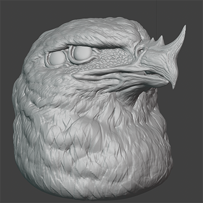

- 頭部の造形 -
鷲をモチーフとした3DCG作品の頭部の造形。嘴や顔の表面の皮の表現に
注力した。今回造形する鷲は、比較的老いたような鷲をモチーフとしているため、
シワの表現にはこだわっている。羽毛の彫り方に関しては、現在研究中のため、仮彫り
としている。
- Art & Design Works -
- Process -
・10月19日(日)

・10月xx日（x）
更新・続報をお待ち下さい。